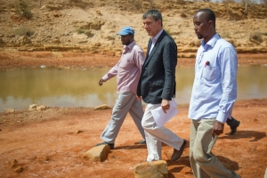

Somalia: "The UN has a big role to play" says outgoing Deputy Special Representative
After two years in Somalia, Philippe Lazzarini, the UN Deputy Special Representative for Somalia, moves onto his next posting in Beirut, Lebanon. On the eve of his departure from Somalia, we sat down with him to get his insights about the future of a country that is trying to rebuild following two decades of civil war.
Q: Somalia is emerging from more than two decades of civil war. Humanitarian needs remain vast and the crisis remains among the largest and most complex in the world. How have things changed in the last two years?
There has been political progress over the last few years in terms of setting up the federal government. The Government has embarked on an ambitious agenda to design and shape the future of the country. They are talking about power-sharing, and resource-sharing. They are talking about security gains, but in a country which has some of the world’s worst human development indicators and where the expectations of the population are quite high, especially when it comes to access to social services, like health, like education and also in terms of jobs, how do we move forward?
Expectations are high, and the United Nations has a big role to play in Somalia. For more than 20 years, our primary intervention has been humanitarian. There hasn’t been any joint response to the most pressing needs such as the one million internally displaced people (IDPs). [That was the case] twenty years ago, ten years ago, and it’s still the case today. Why is that? There has never been a durable solution. To do so, you have to bring development and humanitarian practitioners together. The way forward is to bring all of these competencies together to promote more durable solutions for the country.
The other message is that in the Somalia context, we need to accept that the security costs are much higher than in other contexts. That the cost to implement programmes has a premium.
Q: Somalia is often at-risk for natural disasters such as drought and flooding. As we approach the rainy season, what are the possible implications?
We are entering into what is called the Gu season, the season of long rains which will bring about 70 per cent of the rains for the year. We hope that we will have average or above average rain because this would contribute to the overall food security of the country.
Because of drought and the erosion of the soil we have regular floods, but they will most likely be localized, especially around the Shebelle River and the Juba River in the coming weeks. This will certainly displace thousands of families, but this displacement will be temporary. The humanitarian community is standing by to address needs that may arise, but we also continue looking into long-term solutions, focusing on river and water management, which require large-scale financial investments. Mitigation mainly involves reinforcement of the river bank. As part of the humanitarian response we provide shelter, mosquito nets to prevent malaria, and assistance to prevent other water-borne diseases.
All of this is taking place in a country where we already have important humanitarian needs. We have 700,000 - 800,000 people who can’t meet their daily survival needs, and more than two million people teetering on the edge of falling into a similar situation. One year ago, we had a number of early warnings which were very much similar to the ones that preceded the famine of 2011, so we were extremely concerned. Thanks to early response pre-programming and targeted assistance, we prevented the situation from worsening last year.
Q: The security challenges in Somalia are immense. Al-Shabaab killed six people including four UN workers in April in a staff bus attack in north-eastern town of Garowe. How does it feel to work in such a dangerous environment and to have to go to work the next day?
There have been a number of tragic incidents during my time in Somalia. Over the last year and a half we lost six staff, and since 2008, we have lost 13. There have been a number of direct attacks on the United Nations and there have been situations in which UN staff miraculously survived, such as complex attacks in Mogadishu in February and December 2014. Unfortunately, innocent bystanders were killed during these attacks.
After an attack it’s never business as usual. I never ask people to go back to work the next day. The attacks are brutal events and it is important that we go through a grieving and healing period, but also, that we try to find a way to come out of it, stronger.
After Garowe, which took place nearly three weeks ago, we told colleagues and partners that the way we were doing business in Garowe before had to change. We need more mitigating measures and we also have to accept that operating in a high-risk environment like Somalia has costs. We need to strike the balance between our duty to care – for which we are not ready to compromise – with our mandate, which is to deliver to the most needy people. After Garowe, we initiated some difficult discussions with our partners. There have been high expectations from our partners that the UN be present and operate at any cost. I think we are reversing this push by saying that we need to deliver, we have delivered, we are massively present in-country with, at any given time, 900 staff in country and 1400 staff working on Somalia, but we cannot deliver at any cost. For that we need an environment that is conducive to implementing our activities.
Q: With the clashes in Yemen, the earthquake in Nepal and the many other crises around the world, do you feel the world has forgotten Somalia?
I wouldn’t say the world has forgotten Somalia. Clearly competing crises have negatively impacted the funding situation. We feel it now. We are only 10-12 per cent funded. If we fail to meet the most critical humanitarian needs, we might undermine the broader peace and stability-building agenda. It is critical that while Somalia remains high on the security and political agenda, it must remain equally high on the humanitarian and development agenda.
Q: Do you have a message for the next Humanitarian Coordinator?
The message is that it is important to continue to change the way we are doing business in Somalia. Whatever we aim to do must support national priorities and national ownership and it’s only through this that we will be able to contribute to a more prosperous, durable Somalia. I told the donors this week that the big difference between Somalia and any other crisis country is that the other crisis countries are in the situation where they are falling apart. Somalia fell apart a long time ago and yet we are dealing with a country pulling things together again. I think it’s quite unique and we should not miss this historical moment.
Q: What would you say have been some of the successes in Somalia over the past year?
We have put an end to the outbreak of polio, which does not mean that polio is yet eradicated, but at least there haven’t been any new cases over the last 9 months. We have other success stories in the health sector. For example over the last 10-12 years malaria prevalence rate has gone from 25-27 per cent to less than 2 per cent and some regions, like Puntland or Somaliland, are about to be malaria-free. Through the Food and Agriculture Organisation livestock vaccination campaign, we have allowed 5 million livestock to be exported in 2014, which has generated an income of more than US$350 million. So yes, even if it’s extraordinarily complicated to operate in Somalia, some activities have had a critical impact on the people.
Q: What will you miss about Somalia?
It has been an exceptional time to be in Somalia at this historical juncture and I think we are on the right track. Somalis are fantastically spontaneous, emotional, and warmly welcoming people. I will miss it.

{kind=link}
{kind=link}